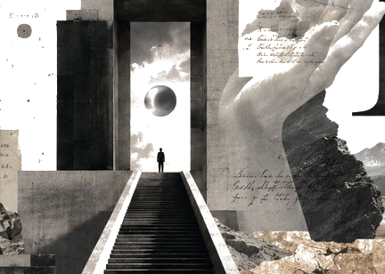
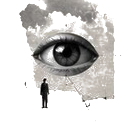
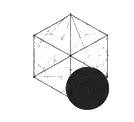
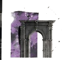
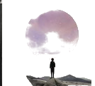
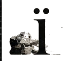
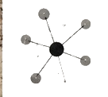
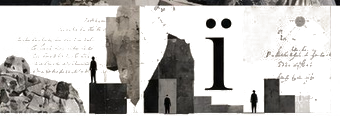
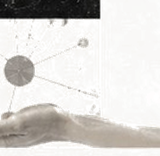

[ Z = D + iD ]


01COMMON入口・人物・メディア
02THEORY理論体系
03PRAXIS実装・訓練・場
04i.PEACE平和構想
05PROJECT i組織構造
06SOCIAL接続先虚数の数学的拡張。D は iD を接続する中核理論。
Detail → 02 ｜ i.PEACE / HeroPEACE-MAN世界平和を実装するラブ＆ヒーロープロジェクト。
Detail → 03 ｜ Peace / Humanitarianmaaaru教育支援を軸とした実践的平和活動。60か国支援を目指す。
Detail → 04 ｜ Praxis / Educationiii PROJECT教育と平和を融合した次世代教育プラットフォーム。
Detail → 05 ｜ Praxis / TrainingV心身を鍛え、リーダーを育成するトレーニングジム。
Detail → 06 ｜ Theory / SocialHOMODIMES高次元における同質性の研究とその社会実業。
Detail →
法人・団体・コミュニティなどプロジェクトの構造体。
View Project i →
外部メディア・SNS・パートナーシップなど社会との接点。